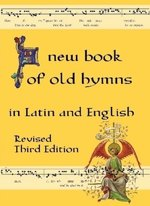

A New Book of Old Hymns
The treasure of sacred music is to be preserved and fostered with very great care.
Fourth Edition Here! - new for 2014!
Contents (3rd ed)
Note: The pdf, TeX and midi files are my own work. The mp3 links go to the recordings of Monastery of St Benedict in Sao Paolo, Brazil. Thanks go to Luís Quiroz for all his work in recording and putting them up at Christus Rex.
- Oremus pro Pontifice nostro / Prayer for our Pope pdf TeX MIDI
- Advent
- Christmas
- Holy Name
- Candlemas
- Lent
- Passiontide
- Gloria, laus / All glory, laud and honour pdf TeX MIDI mp3
- Vexilla Regis / Abroad the regal banners fly pdf TeX MIDI mp3
- O Sacred Head sore wounded (just english) pdf TeX
- Ubi caritas / Where love is true pdf TeX MIDI mp3
- Pange lingua / Sing, my tongue, the Saviour's glory pdf TeX MIDI mp3
- Stabat Mater / At the Cross her station keeping pdf TeX MIDI
- Crux fidelis / Faithful cross (with Pange Lingua, gloriosi Lauream ... / Sing, my tongue, the glorious battle) pdf TeX MIDI mp3
- Easter
- Haec dies / This is the day that the Lord hath made pdf TeX MIDI mp3
- Jubilate Deo / Rejoice in God (a round by Praetorius) pdf TeX MIDI
- O filii et filiae / O sons and daughters pdf TeX MIDI
- Alleluia from Lauds of Easter Saturday pdf TeX MIDI
- Victimae paschali laudes / To the Paschal Victim and Bring, all ye dear-bought nations, bring pdf TeX MIDI mp3
- Salve festa dies / Hail festal day pdf TeX MIDI
- Pentecost
- Veni Sancte Spiritus / Holy Spirit, Lord of light pdf mp3
- Veni Creator / Come Holy Ghost, Creator, come pdf mp3
- Trinity
- Firmly I believe (just english) pdf
- Corpus Christi
- Sacred Heart
- Precious Blood
- Glory be to Jesus (english only) pdf
- Christ the King
- All Saints
- All Souls
- Marian
- Ave Maria / Hail Mary pdf mp3
- Ave Maria / Hail Mary (a round) pdf
- Sub tuum praesidium pdf
- Marian Antiphons - simple roman tone pdf
- Stella Splendens / Bright star on the mountain (2 parts) pdf TeX
- Litany of Loreto pdf
- Ave maris stella / Ave, star of ocean pdf
- Virgo Dei Genitrix / Virgin Mother of God pdf
- For Peace
- Dona nobis pacem / Grant us peace (a round) pdf
- Da pacem Domine / Give peace pdf
- Da pacem, Domine (a round) pdf
- Thanksgiving
- Now thank we all our God (english only)
- Te Deum / Thee, God, we praise (from the Antiphonale Monasticum)
- Kyriale
- Benediction pdf
Why?
The editor loves hymns. From an early age her favourite poems and prayers came from the pages of the parish hymnbook. In time she ended up going to a Latin Mass where all the hymns were in Latin. Now some people don't mind listening without understanding. The music is beautiful and you can always think up your own prayers. BUT, humans have reason and language to communicate ideas and hymns are part of that communication.
Finding out what was sung proved harder than expected. The overwhelming majority know little Latin and are satisfied with the overall ambience of peace and serenity. Thus began the research into these Latin hymns, unearthing many old favourites. Matching the gregorian hymns with their modern day translated versions proved an absorbing adventure. Some hymns turned out to have no standard translation. The editor found the majority of latinists very reluctant to translate. A good translation is a very demanding project, but even poor translations can help and many were only too happy to refine a translation once it had begun.
In short, what you have here is a collection of hymns for you to enjoy. They cover all the liturgical year, from Advent through Easter, right through to the November season for the Holy Souls. There's the default Sunday Mass ordinary, Mass 11, plus Credo 1 and some hymns for Benediction of the Blessed Sacrament. It's a handy book to have at a Extraordinary Roman Rite Mass, or anywhere ancient Latin hymns might come up. I've seen Sacris solemnis printed on a nylon shower curtain, so you never know where a book of Latin hymns with English translations might come in handy!
To the best of my knowledge this book is clear of copyright. Let me know if I'm wrong about that.
Bibliography
- Liber Usualis
- Antiphonale Monasticum, S. A. La Froidfontaine, France, 1995
- Cantus Selecti, ex Libris Vaticanis et Solesmensibus, Desclee and Co, Tournai, 1949
Note that OpusTeX is no longer being maintained. Gregorio is being used for all future work.

This work is licensed under a
Creative Commons Attribution 2.5 Australia License.
Publishing
See the Brandt Bookshop at Lulu.com.
Technical Notes
The book was produced using TeX for the general typesetting and OpusTeX for the music - especially the gregorian chant. The illustrations were edited with the GIMP then converted to eps vector graphics using potrace.
The main text font is Donald Knuth's Computer Modern Roman. Headings are in Peter Wilson's Humanist Minuscule from the bookhands package in the CTAN. Drop caps are in Priory from Paul Lloyd Fonts.
The midi files in the contents listing on this page were made using abc2midi. The music in abc format is all in one file: hymns.abc. They are not polished, little more than a stilted melody. Recordings in mp3 format can be found at Monastery of St Benedict in Sao Paolo, Brazil. They are amateur recordings made in the church. They also seem to have a very comprehensive coverage of all the music you'll hear around the year on Sundays. They cover much of the content in the New Book of Old Hymns.
- First published 2004,
- second edition 2006,
- third edition 2007,
- revised 2009,
- a few typos fixed in 2011 (mainly Adoremus and Stella Splendens).